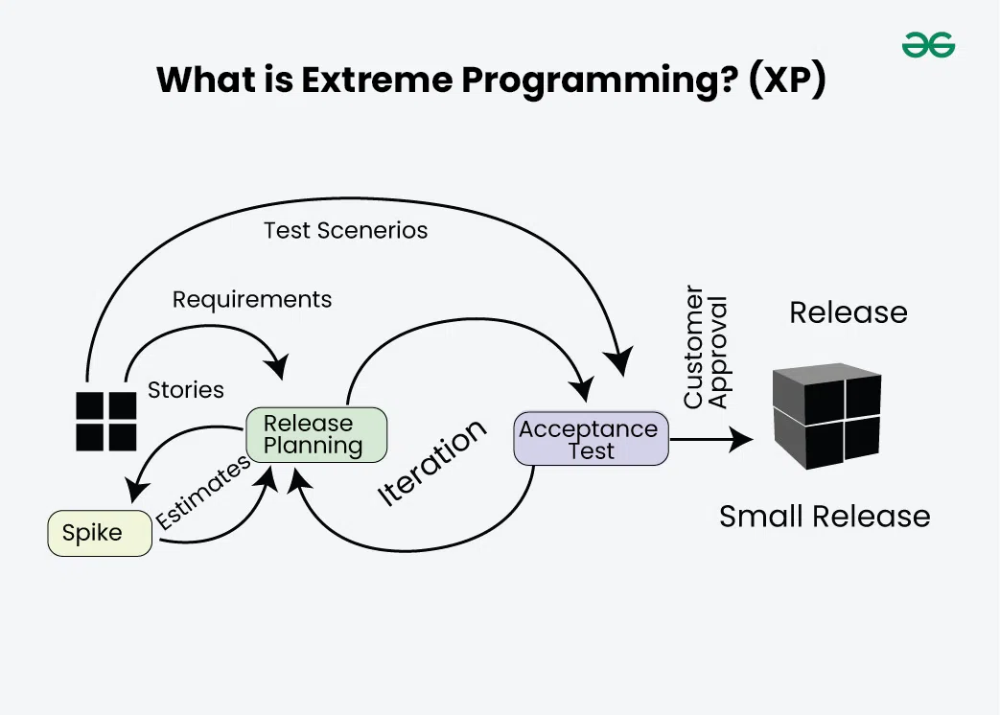

Mis on Extreme Programming (XP)?
Extreme Programming (XP) on agiilne arendusmeetod, mis keskendub kiirele arendusele, pidevale testimisele ja kliendi aktiivsele kaasamisele.
XP eesmärk on teha muudatused lihtsaks ja odavaks isegi hilises arendusetapis.
XP arendusetapid
- Planeerimine – kasutajalood ja prioriteedid
- Disain – lihtne ja minimaalne arhitektuur
- Arendus – koodi kirjutamine (tihti pair programming)
- Testimine – automaatsed testid (TDD)
- Tagasiside – pidev kliendi tagasiside
- Väljalase – sagedased ja väikesed versioonid
XP protsessi joonis

Tähtsaim omadus
XP kõige tähtsam omadus on pidev tagasiside ja kohanemine muutustega.
- nõuded võivad muutuda igal ajal
- vead leitakse varakult
- klient on pidevalt kaasatud
- arendus on kiire ja paindlik
Head ja vead
| Head | Vead |
|---|---|
|
|